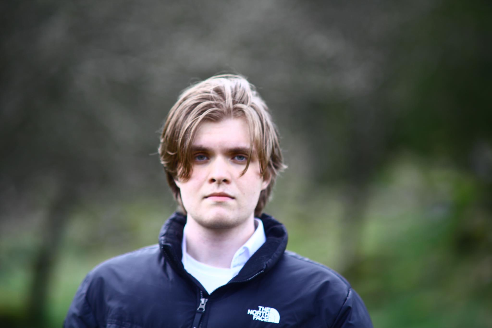

Hej! Jag heter Erik Larsson, och detta är min projektwebbplats.
Jag studerar just nu (2024) webbutveckling på Teknikum.
Jag hoppas i framtiden kunna arbeta med backend-utveckling i .NET miljö.
Jag blev först intresserad av programmering på gymnasiet tack vare min fantastiska lärare Fredrik Jansson på Sunnerbogymnasiet.
Därefter fick jag intresset av det fjärde tekniska året efter att David och Tim besökte min klass.